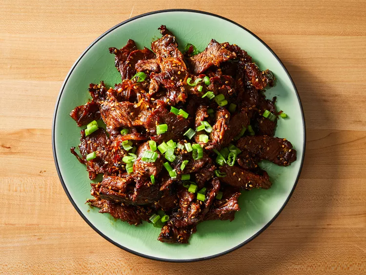

불고기

설명
불고기는 얇게 썬 소고기를 사용한 한국식 바베큐 요리입니다. 대부분의
레시피에서는 고기를 연하게 만들기 위해 으깬 배를 사용합니다. 코카콜라도
같은 목적으로 사용할 수 있다고 말합니다. 이 레시피에서는 매우 얇게 썬
고기를 사용하기 때문에 연하게 만드는 것이 필요하지 않습니다.
재료
- 간장 ⅓컵
- 2개의 파
- 양파 ¼개
- 설탕 3큰 숟가락
- 다진 마늘 3쪽
- 구운 깨 2큰 숟가락
- 참기름 1큰 숟가락
- 고추가루 ¼작은 숫가락
- 생강 다진 것 ¼작은 숫가락
- 검은 후추 ⅛작은 숫가락
- 700g 쇠고기
만드는 법
-
간장, 파의 하얀 부분과 연두색 부분, 양파, 설탕, 마늘, 참깨씨, 참기름,
고추 가루, 생강, 후추를 그릇에 함께 휘저어 준비합니다. 고기를 넣고
골고루 코팅되도록 섞어줍니다. 그릇에 비닐랩을 덮어 냉장고에서 1시간 동안
혹은 최대 1일간 절여줍니다.
-
후라이팬에 중앙 불에서 예열한다. 고기와 양념을 조리하며, 고기를
캬라멜화하기 위해 약 5분 정도 익힌다. 양파의 짙은 녹색 부분으로 불고기를
장식합니다.